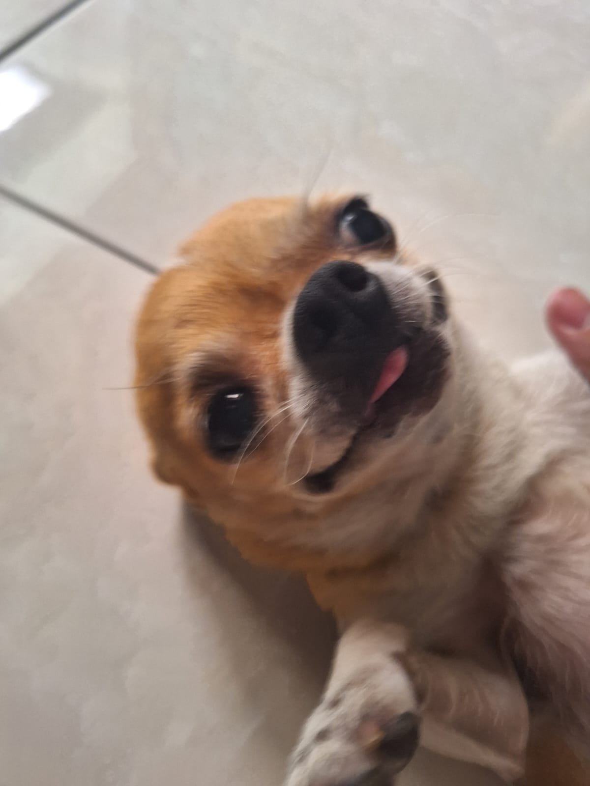
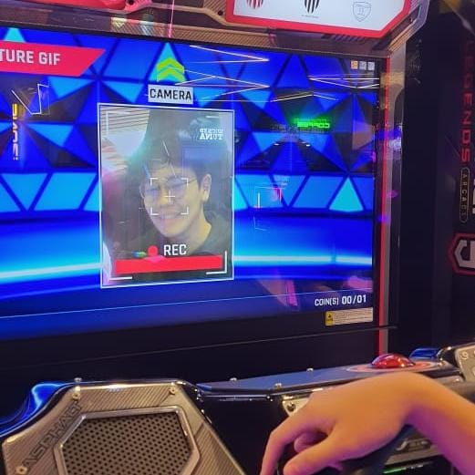
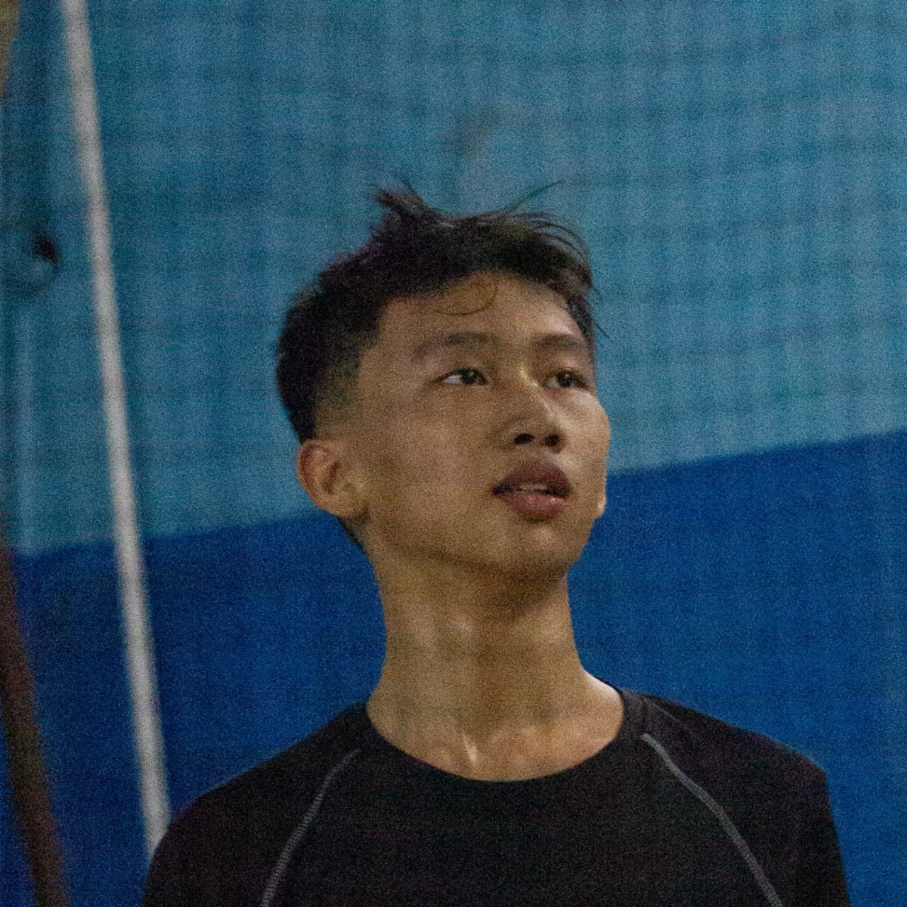

Eco Counting adalah sebuah inisiatif digital untuk membantu pengguna memantau makanan mereka dengan efisien melalui sistem timer cerdas. Kami percaya bahwa pengelolaan makanan yang tepat dapat membantu mengurangi pemborosan dan mendukung keberlanjutan lingkungan. Setiap makanan yang terbuang punya cerita. Kami percaya, perubahan besar dimulai dari hal yang bisa dihitung. Melalui data, kami mengungkap di mana makanan hilang dan bagaimana kita bisa menyelamatkannya. Kami hadir untuk membantu Anda melihat lebih dalam, menghitung lebih cermat, dan berkontribusi dalam menciptakan sistem pangan yang lebih berkelanjutan. Dalam Eco Counting, kami percaya setiap gigitan memiliki dampak - tidak hanya kesehatan pribadi anda, tetapi pada planet yang kita tinggali ini. Lahir dari rasa kepedulian mendalam terhadap kesejahteraan dan keberlangsungan, Eco Counting hadir sebagai solusi inofatif untuk membantu penggunanya dalam membangun kebiasaan makan yang lebih menyadarkan melalui pemantauan makanan berbasis timer cerdas.


